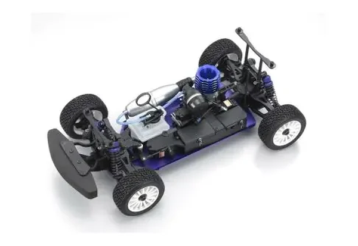

京商 DRX

引用元画像：京商公式サイト
📋 基本情報
| メーカー | 京商（Kyosho） |
|---|---|
| 機種名 | DRX |
| シャーシ略称 | DRX |
| 型番 | 31042, 31043, 31044, 31045, 31046, 31047, 31050, 31053, 31054, 30148, 30149（バージョン・ボディ別） |
| 発売時期 | 2009年～2015年 |
| 価格 | ¥33,000（31047 KIT版） |
| 生産状況 | 生産終了 |
| カテゴリー | ラジコンカー（1/9スケール エンジンRCカー） |
| サブカテゴリー | ラリーカー/ツーリングカー（4WD オンロード） |
| シリーズ | DRXシリーズ |
📏 シャーシスペック
| 全長 | 560mm |
|---|---|
| 全幅 | 260mm |
| 全高 | 187mm |
| ホイールベース | 316mm |
| トレッド | フロント215mm / リヤ215mm |
| タイヤ幅/径 | Φ93×38mm（前後共通） |
| フレーム | プレート式シャーシ |
| 全備重量 | 約2,050g |
⚙️ 駆動系
| 駆動方式 | 4WDシャフトドライブ |
|---|---|
| デフギヤ | ギヤデフ（標準装備） |
| ギヤ比 | 8.86:1 |
| ギヤピッチ | 詳細不明 |
| トランスミッション | 詳細不明 |
| ドライブシャフト | ドッグボーン式ドライブシャフト |
| エンジン | リコイルスターター装備GXR18エンジン（KIT版には付属） 専用マニホールド、マフラー付属 |
🔧 サスペンション
| 形式 | 4輪ダブルウィッシュボーン独立懸架 |
|---|---|
| サスアーム | 詳細不明 |
| ダンパー | オイルダンパー×4本 ※コイルスプリング式 |
| ステアリング | 詳細不明 |
| ベアリング | フルボールベアリング装備 |
💡 特徴
1/9スケールのコンパクトラリーカー
- 2009年にリリースされた1/9スケールのラリー/ツーリングカー
- コンパクトサイズながら本格的な4WDシャフトドライブ
- プレート式シャーシで高剛性を実現
- 約2,050gの軽量設計
豊富なバリエーションとバージョン
- 2009年：SUBARU IMPREZA WRC 2008（31042）、CITROEN C4 WRC Rallye de France Tour de Corse 2008（31043）、Lancia Stratos WRC（31044）、MITSUBISHI LANCER EVOLUTION VII WRC（31046）
- 2010年：FORD FIESTA S2000（31050）
- DRX R246 Specification（31045）
- DRX R246 Spec V2（30148）
- DRX Kyosho Cup Edition 2012（30149）
- 2012年：DRX DEMON with Syncro KT-200 Transmitter（31053）
- 2015年：DRX Subaru Impreza One 11 with Syncro KT-200 Transmitter（31054）
KIT版の特徴（31047）
- シャーシ組み立てキット一式
- リコイルスターター付GXR18エンジン付属
- 専用マニホールド、マフラー付属
- 六角レンチ4種、十字レンチ付属
- ボディは別売（DRX専用ボディが必要）
走行までに必要なもの（別売）
- DRX用ボディ
- 各社2ch 2サーボプロポ
- 燃料
- 始動用具
- ボディ塗装用塗料
- プロポ用電池
ReadySetとKit形式の両方を展開
- ReadySet版：すぐに走行可能な完成度の高い仕様
- Kit版：組み立てから楽しめる本格仕様
- 特別仕様版：R246 Spec、Kyosho Cup Editionなど
🔧 ぽすとそに工房での修理実績
修理難易度
★★★★★（非常に難しい）
生産終了しており、パーツがたまにしか出てこないため、修理には高度な技術と代替パーツの知識が必要です。
よくある故障・注意点
- パーツ入手困難：生産終了により純正パーツの入手がたまにしか出来ない
- 1/9スケール特有のパーツ：他のスケールとの互換性が限定的
- ギヤデフの摩耗：長期使用でギヤデフの精度が低下
- オイルダンパーのオイル漏れ：経年劣化によるシール不良
- ドライブシャフトの摩耗：高負荷時の摩耗に注意
- GXR18エンジンのメンテナンス：専用パーツが必要
- ボディの入手困難：DRX専用ボディの確保が難しい
修理のポイント
- 互換パーツの探索：1/9スケールで限定的だが他の京商製品との互換性を探る
- ギヤデフのメンテナンス：定期的なグリスアップと点検
- オイルダンパーのオーバーホール：Oリング交換とオイル補充
- ベアリングの定期交換：固着前の予防的交換推奨
- エンジンの適切な調整：GXR18エンジンの特性理解が重要
- ボディの保護：レアボディの保存状態が重要
- パーツ在庫の確保：見つけた時に予備パーツを確保
その他の特徴
- 1/9スケールのユニークなサイズ
- コンパクトで扱いやすい
- ラリーカーボディが魅力的
- コレクターズアイテムとしても価値あり
- 2000年代後半～2010年代前半のラリーシーンを再現